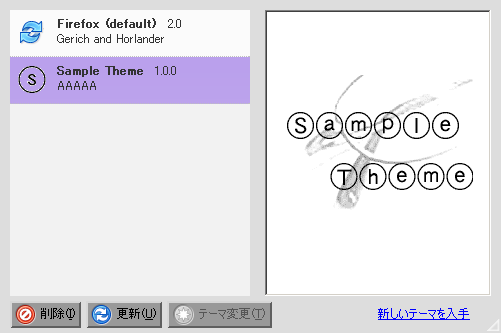
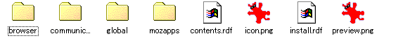

まずはファイルを覗いてみよう
まずは、この講座のためにサンプルを作成しましたので、これをdlしてください
zip圧縮ですので、これを解凍すると
- install.html
- install.js
- sample.jar
というファイルが出てきますので、install.htmlをFirefoxに読ませて、テーマをインストールしてください
こんな感じでインストールが成功すればOKです
htmlファイルの中を覗けば分かりますが、インストールはJavaScriptを利用して行っています。
公開する場合には、貴方のページの構成などの必要に応じて、書き換えて使っていけば良いでしょう
そもそもJARファイルって何？
JAVA Archiveの略でJAVAプログラムをWEB上で配布するときにzip圧縮してまとめることで、回線の無駄を無くすための形式です。
同じzip圧縮なので、便利だと思って流用したのでしょう、おそらく…
JARファイルを開こう
sample.jarの拡張子を変更してsample.zipにしてしまいます、その後に何でもいいので解凍ツールを使ってファイルを開いてみましょう
こんな感じのファイルが出てくるでしょうか？ これがFirefoxのデザインを決定しているファイル達の正体です、これを書き換えて行けば、自分好みのテーマを作成することが出来るんですね